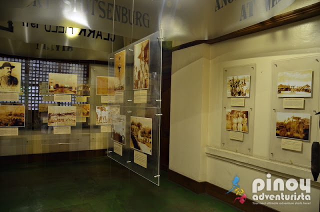

Top Attractions in San Fernando

Metropolitan Cathedral
The stunning cathedral at the heart of San Fernando, a landmark of faith and colonial architecture.

Giant Lantern Festival Site
The plaza and grounds where the annual Ligligan Parul competition dazzles thousands every December.
Learn More →
Museo ning Kapampangan
A museum dedicated to preserving the history, language, and culture of the Kapampangan people.